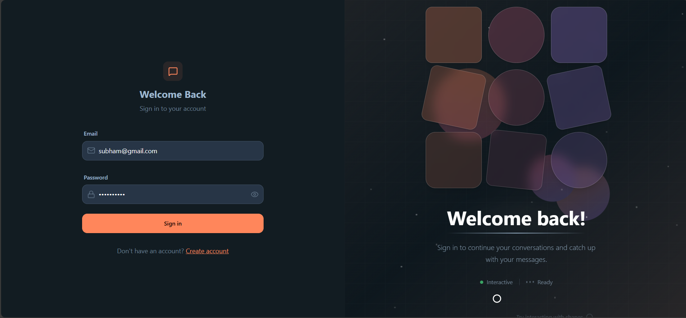

Enterprise-grade D2C customer support AI agent for an energy drink brand. Uses Groq's Llama models with a hybrid RAG pipeline and session-secure context injection to bridge LLM reasoning with database actions — while preventing prompt injection and spoofing attacks.

User Query
│
▼
┌──────────────┐ ┌──────────────┐
│ Express + │────▶│ Groq Llama │
│ TypeScript │ │ (Reasoning) │
└──────┬───────┘ └──────────────┘
│
▼
┌──────────────┐ ┌──────────────┐
│ Zod Schema │────▶│ PostgreSQL │
│ (Validation) │ │ (Prisma) │
└──────┬───────┘ └──────────────┘
│
▼
┌──────────────┐
│ Clerk │
│ (Auth+Svix) │
└──────────────┘
Key Decisions
- Hybrid RAG pipeline with session-secure context injection — prevents LLM prompt spoofing in production
- Zod runtime validation on all LLM outputs — raw model responses are untrusted input
- Sentry + Pino for structured observability — production debugging without guesswork
- Express + Helmet + rate-limit — defense in depth from day one
Stack: TypeScript · Express · Groq SDK · Prisma · PostgreSQL · Clerk · Sentry · Zod · Helmet